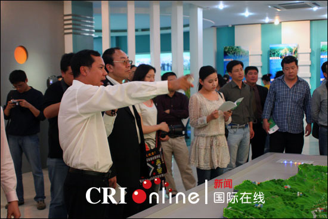
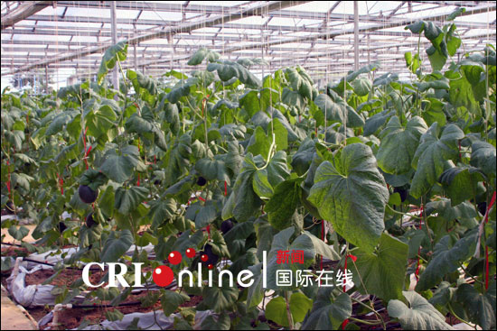
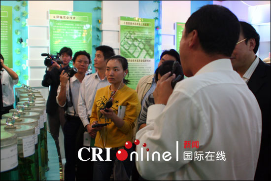
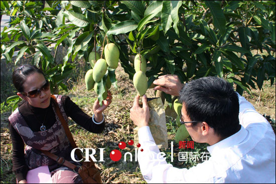
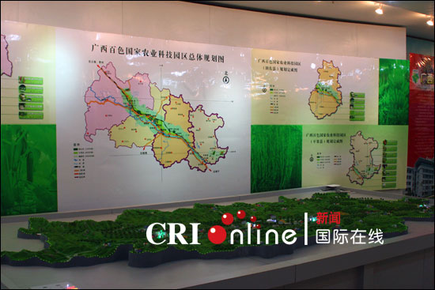

西百色国家农业科技园区是科技部、农业部等六部门2001年9月批准建设的全国首批21个国家农业科技园区（试点）之一，是广西唯一的国家级农业科技园区。

11月13日，中央新闻采访团参观田阳县百育镇百色国家农业科技园区。图为园区相关负责人介绍情况。

11月13日，中央新闻采访团参观田阳县百育镇百色国家农业科技园区。图为园区内种植的甜瓜
国际在线消息（记者 殷亮）：广西百色国家农业科技园区是科技部、农业部等六部门2001年9月批准建设的全国首批21个国家农业科技园区（试点）之一，是广西唯一的国家级农业科技园区。
几年来，园区贯彻“面向西部、面向东盟和面向三农”的发展方向，成为百色市农业科技的辐射源、人才培养和技术培训的示范基地，促进农业产业升级和农村经济发展，初步形成具备现代农业展示、科技培训、推广、交流和服务等功能的亚热带特色农业示范基地和区域性科技合作与技术转移平台。
---发挥资源优势，突出地方特色。建成芒果、蔬菜、香蕉、甘蔗、种子种苗繁育、特色畜禽水产养殖六个产业化示范园，是全国重要的“南菜北运”基地、中国“芒果之乡”、全国亚热带水果生产基地、全国“双高”糖料生产基地和我国热带特色农业示范基地。
---搭建科技服务创新平台，加强农业技术组装与集成，推进科技成果转化。建立广西百色现代农业技术研究推广中心、农业专家大院、科技特派员试点，以及 “市、县、乡、村、户”五级联动的农村科技信息服务传播体系，开展亚热带特色农业关键技术的研究与示范工作，引进、消化、吸收科技成果、新技术353项。
---创建广西现代农业“人才小高地”、“博士后科研工作站”等平台。聘请袁隆平院士等一批高层人才为园区顾问，吸引和聚集140多名国内外专家进入园区开展科研、指导和服务工作。
---建立面向东盟的国际科技合作基地。开展中国—东盟亚热带农业技术发展（百色）论坛及亚热带果树栽培技术国际培训等活动。


